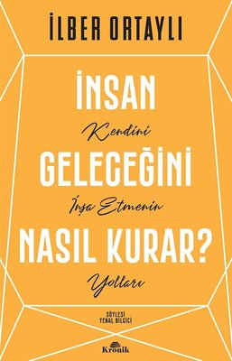
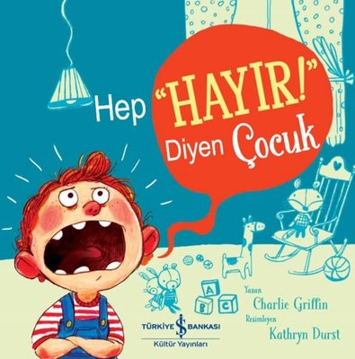

İnsan Geleceğini Nasıl Kurar?

Sepete Ekle
Utangaç Ayı Monti
Sepete Ekle
Kumarbaz
Sepete Ekle
Avcunuzdaki Kelebek
Sepete Ekle
Hep Hayır! Diyen Çocuk

Sepete Ekle
Zengin Baba Yoksul Baba
Sepete Ekle